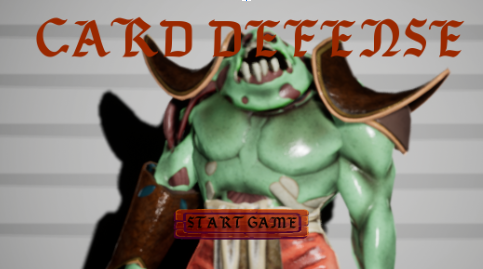
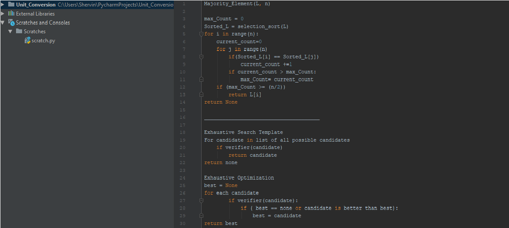
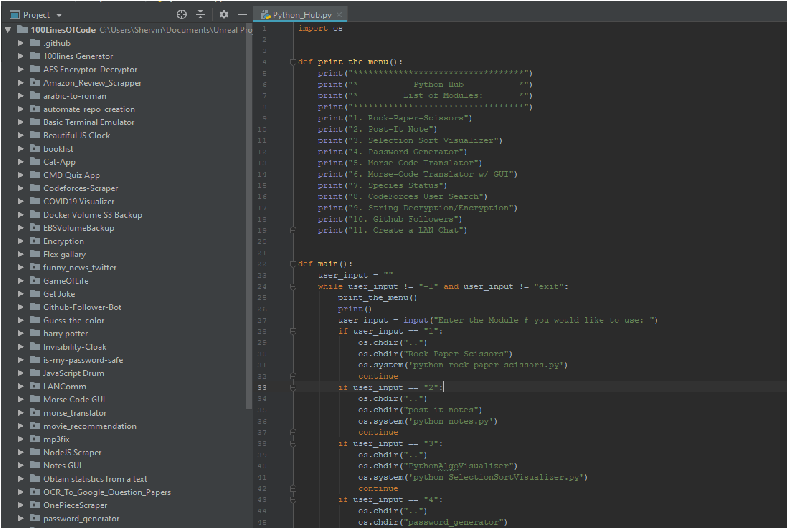

CPSC 362
In this class I learned basic concepts, principles, methods, techniques and practices of software engineering. I learned how to properly utilize Computer-Aided Software Engineering (CASE) tools, proper use of Version Control, and Process Models (Spiral, Agile, DevOps, Scrum, Kanban).

A semester-long group project with the scrum method to design a tower defense game in Unreal Engine. The game utilizes AI, targeting, automation, levels, and UI all created through blueprints. It reinforced the importance of version control in a group environment.

My First Contribution to #100-Lines-Of-Code Project where I introduce a new module! The module was created in python, and can convert between units of measurement for mass, length, and volume respectively. The project's purpose was to familiarize myself with the process of creating a pull request.

My Second Contribution to #100-Lines-Of-Code Project where I proposed an architecture change! I created a hub in python that redirects to the individual modules in the repository, and back to the hub again. The proposed change follows call-and-return architecture.